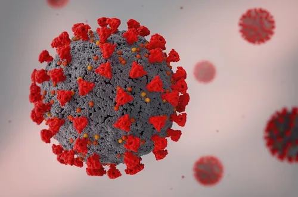
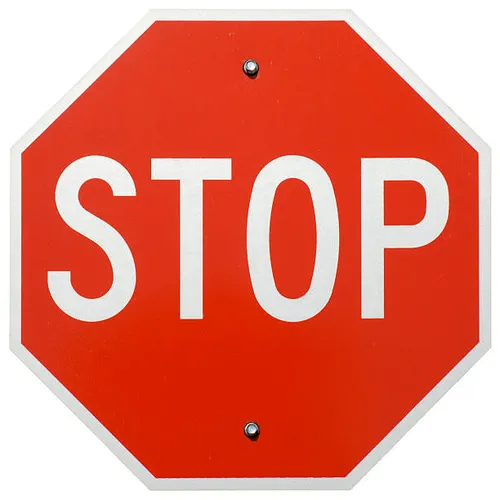
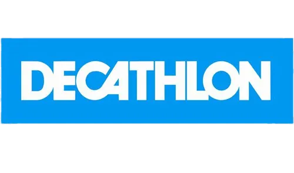
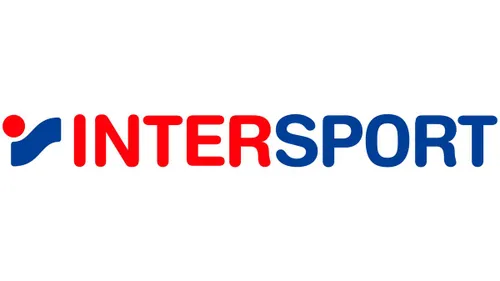
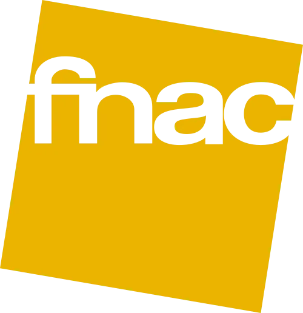

My professional experience
No professional experience
Regrettably, I don't have any professional experience, as my 3rd year internship was cancelled during the Covid19 pandemic.
 I was turned down by 6-7 companies (decathlon, fnac, intersport, temps2sport, micromania etc...) because it was difficult for them to take on a trainee after a Covid-financed deficit.
  The micro-enterprise project.
My school decided to cancel the 3rd year internship, as I was unfortunately not the only one in this situation. Instead, we were offered a project to create a micro-business.
The college invited Jean-Yves Schillinger (a well-know chef from Colmar) to act as our mentor. We were divided into groups of four students and asked to create an idea for a fast-food chain. We had to divide up the roles of treasurer, commercial manager and production manager. I took on the role of treasurer and team leader, which taught me how to manage a company's expenses and profits to prevent it falling into deficit.
The project ended with a presentation in which each member of the group showed their part, and we were awarded a very good note.
Position on a sports association committee
At the last general meeting of my Karate club, the club president said that the club committee needed new blood.
So I offered to give back to the club everything it's given me over the years. But all the places are already taken.
However, I may be offered a position as assessor or reviewer in the years to come.